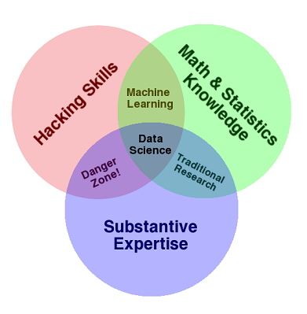
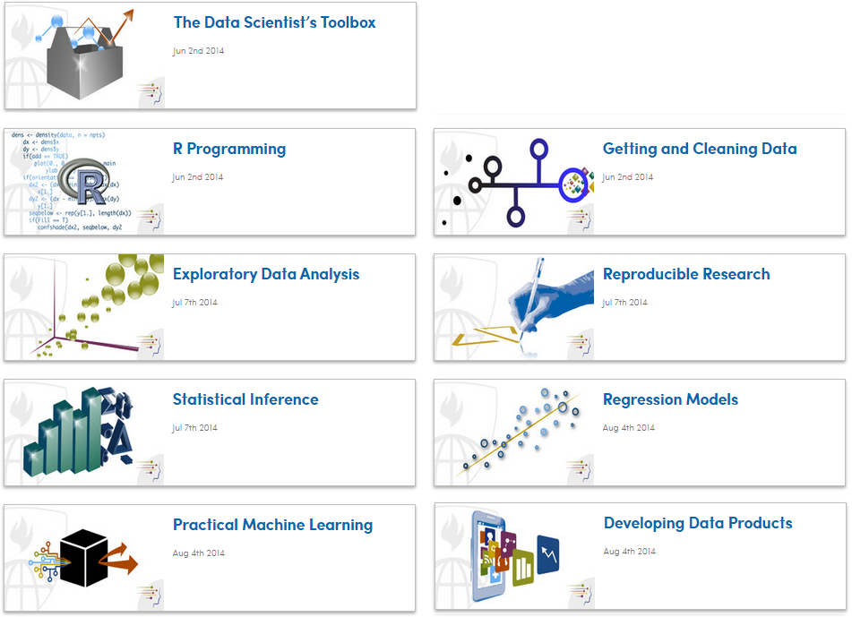
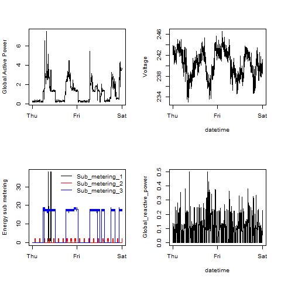
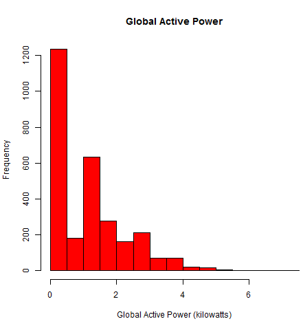
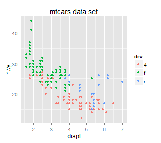
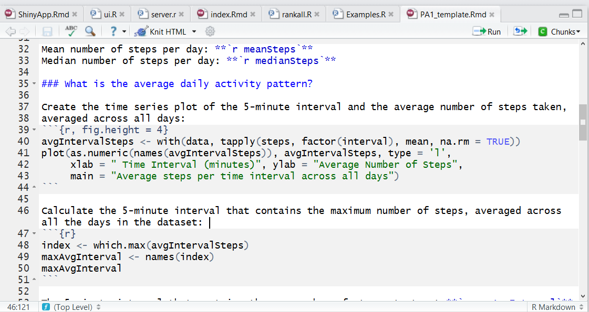
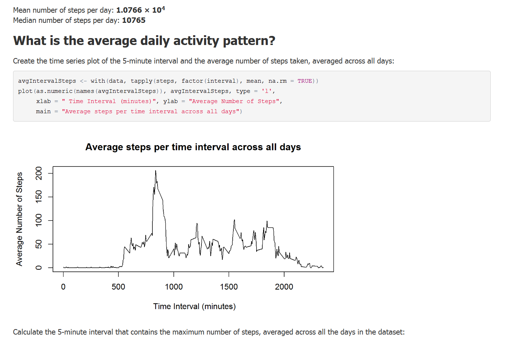
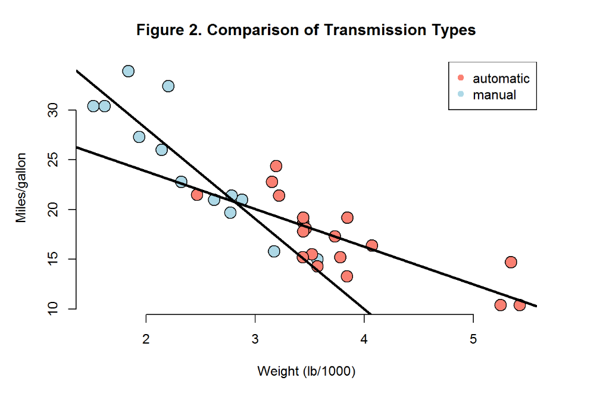
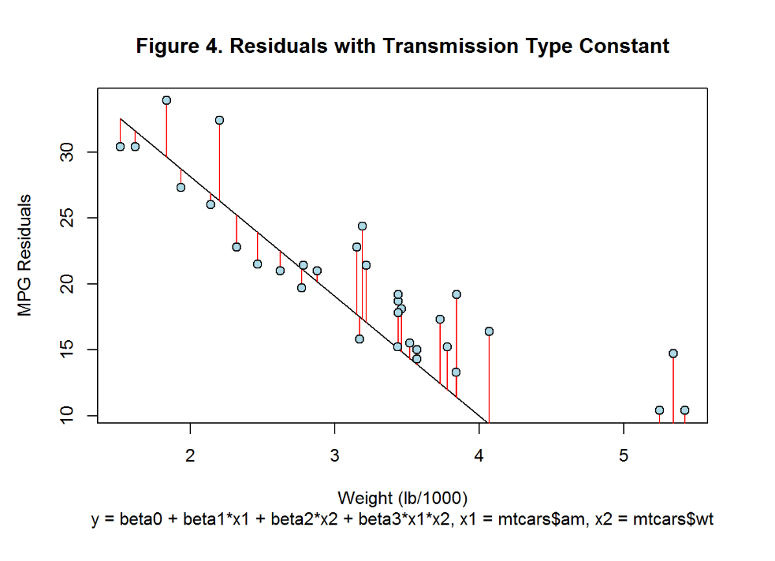
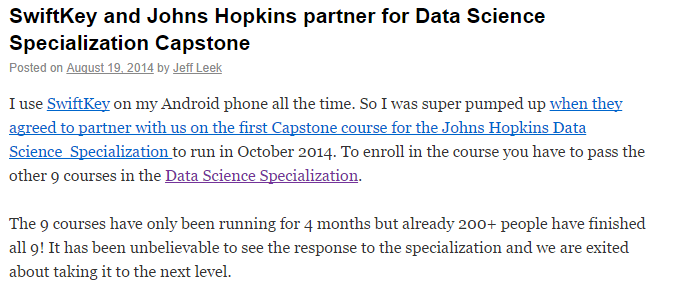

https://www.coursera.org/specialization/jhudatascience/1?utm_medium=listingPage
Sonya Crofton, 9/11/14
https://www.coursera.org/specialization/jhudatascience/1?utm_medium=listingPage




  
qplot(displ, hwy, data = mpg, color = drv, main = "mtcars data set")


 
